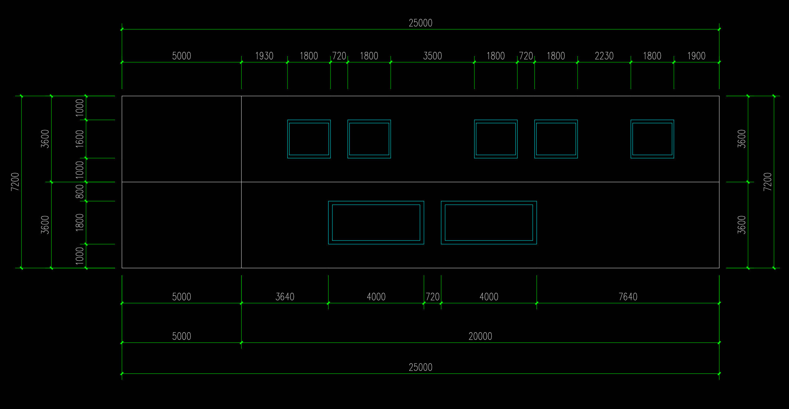
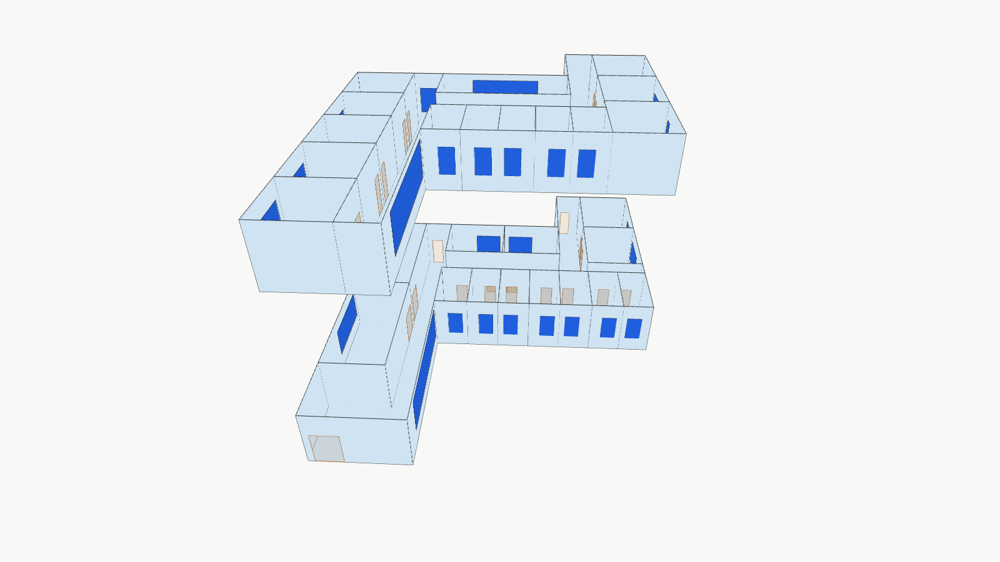
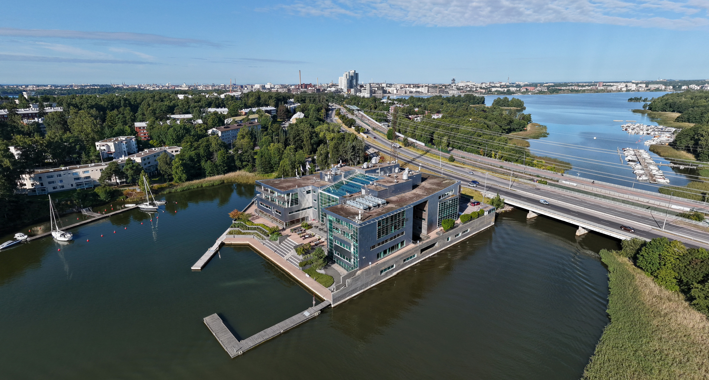
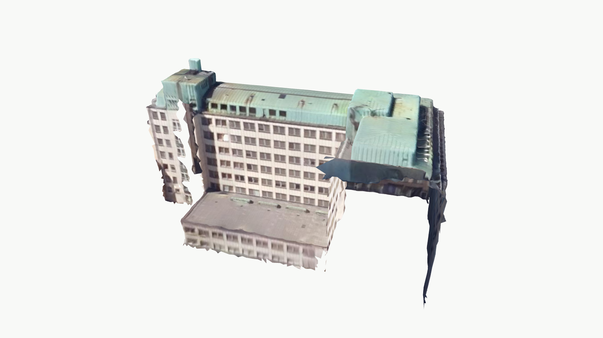
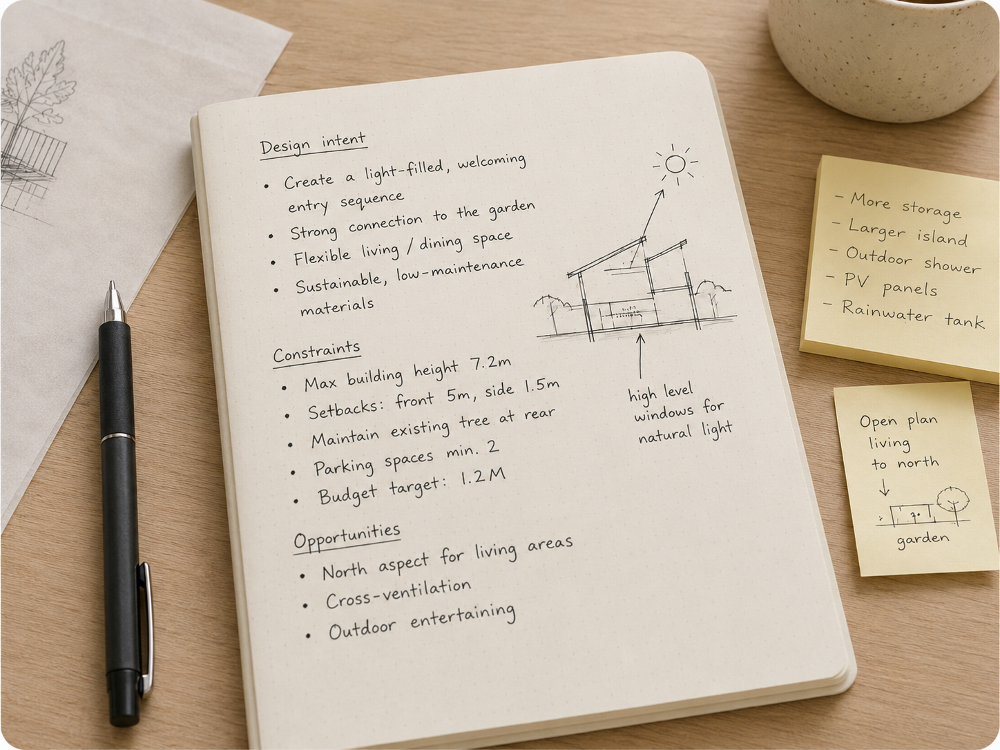
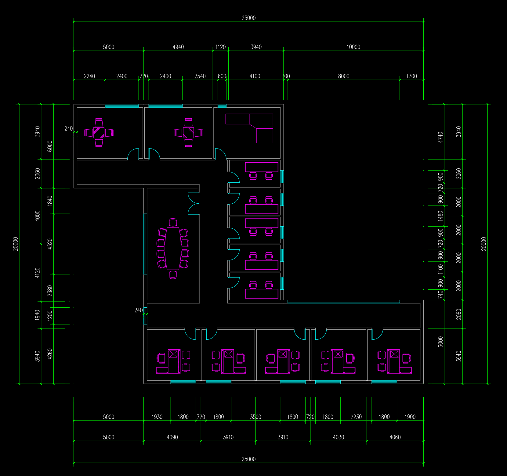
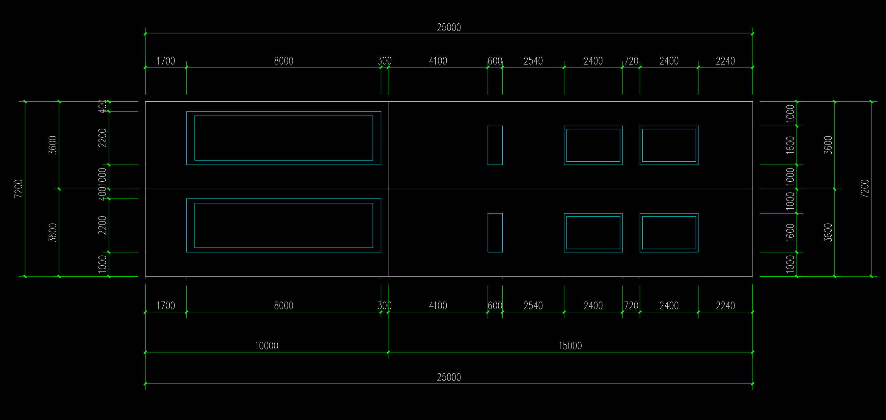
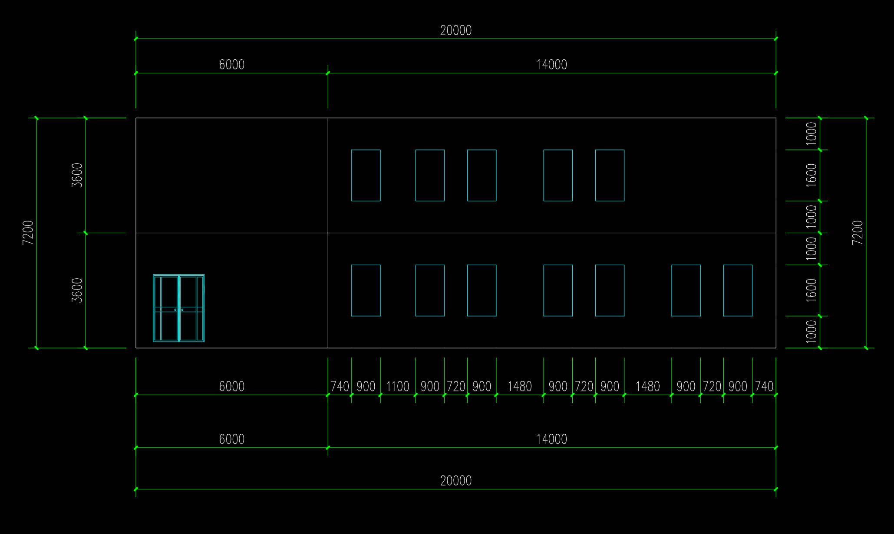
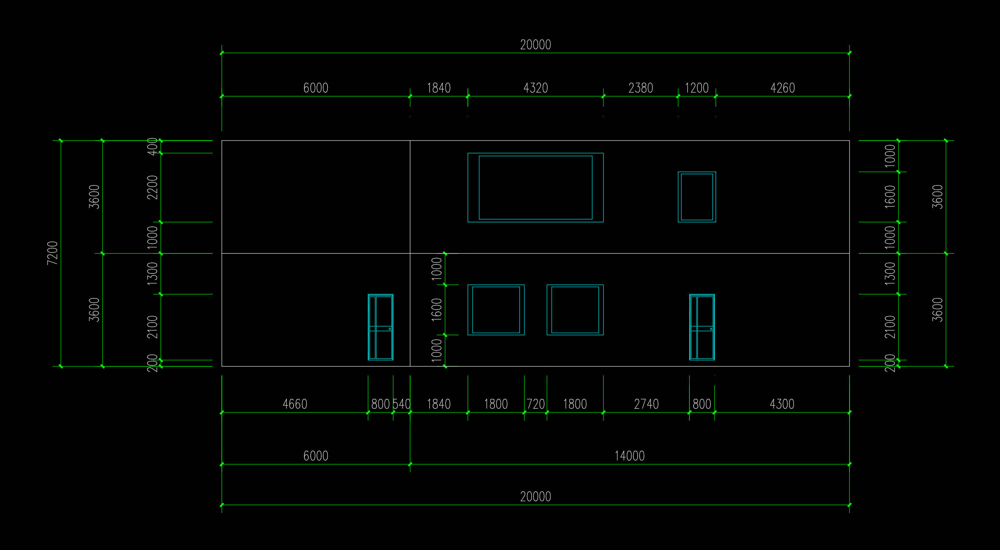

还原建模
Reconstruction
Bringing building simulation into the design iteration loop


长链路 · 依赖人工 · 反馈滞后Long workflow · Manual effort · Delayed feedback
Multimodal inputs to lightweight BIM




Reconstruction
Partial inference
Full inference
轻量 BIM Lightweight BIM
Aerial image: Harria / Wikimedia Commons · CC BY-SA 4.0
A complete architectural drawing set to lightweight BIM




2 张平面 + 4 张立面2 floor plans + 4 elevations
← → 翻页 / Navigate F 全屏 / FullscreenO 目录 / Overview